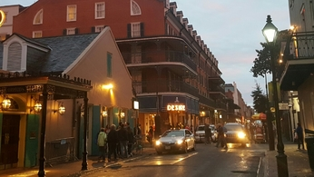

首页
专属定制
游友社区
畅游名校
公益机制
关于我们
登陆
注册
请补全您的基本信息
different form elements
1
第一步
2
第二步
3
第三步
4
第四步
姓名
*
性别
*
男
女
手机号
*
邮箱
*
请写出您的个性化方案
*
填好您的个人信息和需求，点击提交订单，大约10分钟后，游友平台的客服人员就会与您取得联系。
请补全您的订单
different form elements
请选择时间
请选则开团人数
1 ~ 5人
5 ~ 10人
10 ~ 15人
15 ~ 20人
20 ~ 25人
有无自己制定的路线
有
无
提交
热门旅行方案
20
冀蒙晋装逼小环线，别人都以为你在新西兰。
15
东欧行摄攻略 机位大揭秘（全程公共交通 法兰克福－捷克－匈牙利－克罗地亚－斯洛文尼亚－慕尼黑 更新中）
26
泰国清迈自由行攻略之古城、拜县。
126
【美西大环线★黄石大提顿★房车自驾】迷你房车游美西，十一月龄小小少年看世界（附详细的房车自驾吃住行和带宝宝徒步攻略行程）
精华
17
2017，历史照进现实，寻找一个真实的古巴
精华
117
read-name-05" __href="http://www.qyer.com/u/4672618" target="_blank">招财8175
圣地西藏（一），多少次幻想着这块土地。
精华

23
新奥尔良没有烤鸡翅，留学旅行。
精华
134
在城市中穿梭，三个文化底蕴深厚且充满故事的城市之行。
精华
74
【乍见之欢。】—— 蜜月环摩洛哥自驾12日（索维拉+马拉喀什+撒哈拉+菲斯+舍夫沙万+丹吉尔+艾希拉+卡萨布兰卡）
52
这里的太阳永不落下——环游西班牙(13天巴塞罗那、马德里、科尔多瓦、塞维利亚、格拉纳达）
精华
42
一次说走就跑的旅行——马尔代夫密度帕茹与马富施蜜月双岛游
精华
34
二度游瑞士，经典补充+小众探索，14天瑞士深度游
10
在极致文艺的西贡——生活不要太匆忙（私藏最好咖啡店/酒吧 list)
132
小闺蜜把臂同游新加坡（良心楼主一次性更完）
精华
70
【Karen看世界】东非肯尼亚——追寻自然与狂野，探索生命的意义（含高清视频）
42
（完结）无声相见。【15天自驾6000km探秘美西五大国家公园】【大峡谷、拱门、黄石、大提顿、优胜美地】+急情处理经验
精华
98
冬日玩转西班牙色彩——实景重现《权力的游戏》（戏服道具、斗牛士装、水手服等趣味变装！小众景点分享）全文完
精华
52
epic14
生生不息的旧时光——四国的铁道、温泉与冷暖人间（日本最佳观光列车与青春18海报人气小站全体验）
44
Frande_Ong
【澳洲留学生10天小众之旅】资深玩家带你漫游悉尼、大堡礁跳伞+帆船+浮潜、墨尔本+本迪戈艺术风情，体验local隐秘玩法
精华
6
xiaoputao0501
吃货夫妇带你吃遍香港最好吃的网红餐厅--厄尔尼诺现象也阻挡不了的港澳行，超强干货贴~
精华
149
jane007
岁月不可辜负之二－－听海神庙涛声，观圣泉寺神明，居乌布清幽山谷，醉宝格丽绚烂日落
精华
158
cathydawnlight
孤单是一个人的狂欢——23天埃及、约旦、以色列（含北部自驾）行记（全文终）
190
milkkitty
【月半夫妇】Lands End，不能完美更多的冰岛追光之旅～2017春节，赫尔辛基+冰岛9日
精华
54
EthanRyan
穿越铁幕，拥抱世界（德捷奥斯匈五国首都，布达佩斯更新中）
17
maggie0315
【伊比利亚的两颗牙】2017年2月西班牙&葡萄牙自由行15天~超详攻略
精华
77
天晴姐
【天晴姐步履不停之】终于和你饮过冰，零度天气看风景（2017春节北海道之旅）
精华
32
zhengwei198803
2017年春节，在挪威蹲守极光（Tromso & Loften自驾，Bodo轮渡）
精华
20
EzioHsu
2017摩洛哥旅行摄影报告（主线四个城市+撒哈拉，纯摄影向，从行前准备到后期教程，更新中）
78
godstudy
2017寒假美西16天自驾亲子游，满满干货（含蒙特雷观鲸，洛杉矶环球影城，迪士尼双园，死亡谷，大峡谷南缘直升机等）
13
荒梁
八天时间探秘三千年的以色列，寻觅应许之地的美和魅
精华
17
蓝田玉烟
最美法式小城，最美越式梯田-骑自行车畅游河内和沙巴
精华
65
镜之形而
天高地厚IV—重返安纳布尔纳（冬季ACT via Thorung La+Poon Hill）（全文完）
精华
12
interdark
关西关东15天的蜜月之旅，带着胃和相机上路吧！【大阪京都奈良神户东京】
45
Plato_Whisper
【世界美如斯】抓住盛夏的尾巴——伊比利亚半岛10月10日漫行记（巴塞 塞维 马德里 里斯本 波尔图）内附大量美图攻略
精华
55
JOE帮主
【花间雪，湖畔春，晴潋雨蒙入梦深】（瑞士9日自驾游）
109
sasasisi929
英国签证申请攻略(17年3月版最新出炉，自由行，上海送签，所有材料自己准备/翻译)
精华
38
张大枪
神焰绽放之地，南太平洋秘境-瓦努阿图
精华
33
蕉囝
北美秘境---Havasupai，大自然的蓝宝石，「一个鲜为人知的世外桃源」【游友独家首发】
精华
74
浅白色
意马平川·致垮掉的蓝窗：17天再游意大利及马耳他。
精华
6
叶梓颐-巡天者
花最少钱带你上天-玻利维亚天空之镜绝美图片+超实用攻略